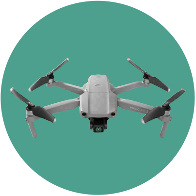
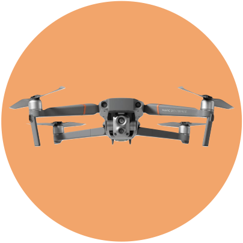
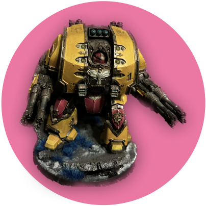
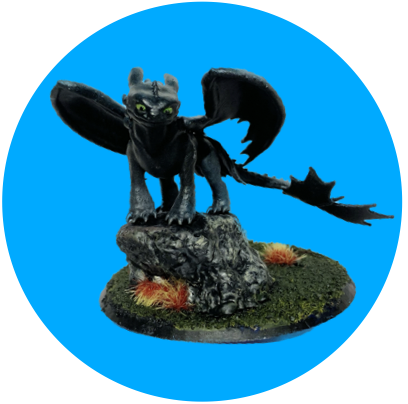

|  |
I got a Mavic Air 2 when I moved to N.M. to do drone work, and it changed my life. All of a sudden, I wanted to take pictures of everything. All the pictures on this website were taken with this drone. I have used this drone in my work, and have made some beautiful models with some of the orbits I've flown. |
|  |
I bought a Mavic 2 Enterprised Advanced to pursue some assorted business ventures, and to use with research. I wrote some code to automate flight paths for photgrammetric models. I flew the same orbit a hundred times over two months as a building on campus was torn down. By the end of April, I want to have every orbit of the building demolition in the same coordinate system, and to step through the demolition, model by model, completely stabilized. I live in the country and I fly it as much to find wildlife as for work. On the thermal camera, I've seen tons of deer, opossums, a squirrel, and no coyotes. I desperately want to see a coyote. |
 |
This is Hope! She's an Eachine Airloader that I mounted four props to. She carries a Pixhawk Orange Cube with a Here3 GPS. I'm a terrible fixed-wing pilot, so I added a quad to make her easier to land. She has flown as a fixed-wing, and as a quad, but she broke the first time I tried to transition. I hope to get her flying this summer. There's an incredible peace listening to music and soldering things–even things I just crashed. |
|  |
I play Iron Hands in Warhammer 40,000! I'm bad at it, but I love painting, which I am also bad at. |
|  |
I have an Anycubic Photon and a Flashforge Creator Pro that I've had tons of fun with. The picture to the left is a resin print from the photon, and I've used the Creator Pro (FDM) to print parts for Hope, a robot arm for a raspberry pi robot Steve, and tons of little home improvement things. I took a bunch of CAD courses in high school and it feels good to be able to put them to good use making whatever I want. |